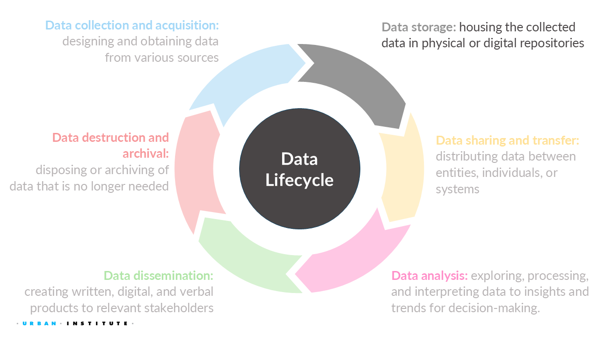
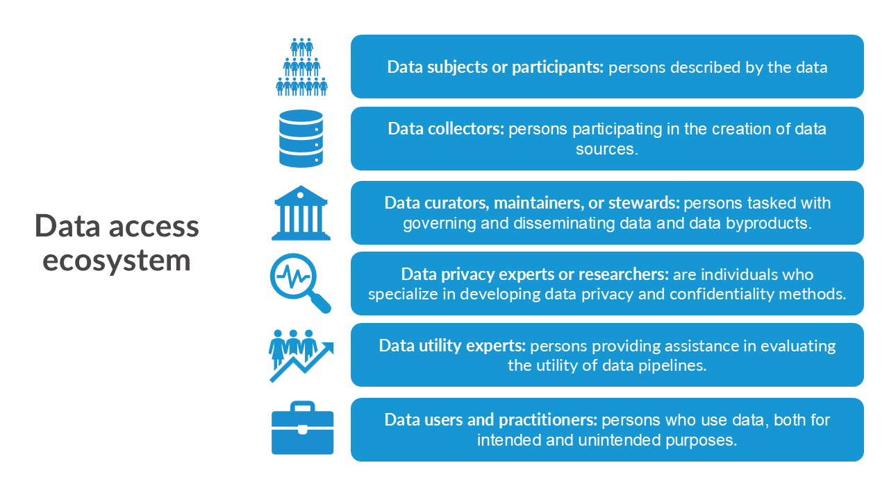

| Name | Race | Age | Education |
|---|---|---|---|
| peter hunter | caucasian | 25 | bachelors |
| Beth SMITH | african-american | 32 | Master’s |
| ryan chadwick | Caucasian | 40 | PHD |
| Silvia Li | asian | 28 | bachelors |
| Larry Thomas | asian | twenty-three | high school diploma |
| Anne-Marie | caucasian | 35 | Bachelor’s |
4 Data Storage

For this week, we will learn how to properly store confidential or sensitive data and how to share or transfer that data safely.
4.1 Quick recap on week 2
4.1.1 Definitions

4.1.2 Data types
We learned about the three principal types of qualitative and quantitative data:
Primary: Any data directly collected by an entity.
Secondary: Any data collected by another organization that a stakeholder uses for analysis.
Administrative: Any data collected by governments or other organizations, as part of their management and operation of a program or service, that provide information on registrations, transactions, and other regular tasks.
4.1.3 Data collections challenges
We’ve discussed several challenges surrounding security, privacy, ethics, and equity in data collection. Specifically, we’ve highlighted the importance of:
- Deciding whether to collect the data or not.
- Defining groups and other variables that impacts our communities.
- Recognizing that a lack of data results in a lack of action.
4.1.4 Week 3 Assignment
Read
- Chapter 4: How Do Data Privacy Methods Avoid Invalidating Results?
Optional additional read
Write (600 to 1200 words)
Choose a community you belong to (e.g., your hometown, childhood community, or Stonehill College) and identify how it uses public federal datasets (e.g., from the U.S. Census Bureau, Department of Transportation, etc.) to inform a policy decision.
Describe the specific use case you’ve identified and analyze how limiting or expanding access to that data (or multiple data sources) could impact your community.
Example (that you can’t use): School district lines.
4.2 Why is data storage so important?
Archives and domain repositories that preserve and disseminate social and behavioral data perform a critical service to the scholarly community and to society at large by ensuring that these culturally significant materials are accessible in perpetuity. The success of the archiving endeavor, however, ultimately depends on researchers’ willingness to deposit their data and documentation for others to use.
From Inter-university Consortium for Political and Social Research (ICPSR, n.d.), one of the world’s largest data archives of social science data for research and education.
4.2.1 More definitions
There are many versions of the data we should define.
Original dataset:
Original dataset is the uncleaned, unprotected version of the data.
For example, raw 2020 Decennial Census microdata, which are never publicly released.
Confidential or gold standard dataset
Confidential or gold standard dataset is the cleaned version (meaning edited for inaccuracies or inconsistencies) of the data; often referred to as the gold standard or actual data for analysis.
For example, the Census Edited File that is the final confidential data for the 2020 Census. This dataset is never publicly released but may be made available to others who are sworn to protect confidentiality (i.e., Special Sworn Status) and who are provided access in a secure environment, such as a Federal Statistical Research Data Center.
Public dataset or statistics
Public dataset is the publicly released version of the confidential data.
For example, the US Census Bureau’s public tables and datasets or the Bureau of Labor Statistics reporting the unemployment rate statistics.
Different levels of security and privacy are needed for different versions of the data. We will mostly focus on the confidential and public versions of the data. However, note that the original or raw data must also be securely stored and properly documented for future reference.
No set taxonomony in the field!
All definitions used (including the data life cycle) are my opinionated definitions. Since many different fields work in data security, privacy, ethics, and equity, there is no standard taxonomy, which causes a lot of confusion. I set a standard definition in all my work, including this course, to ensure we are using the same common language. However, note that when reading other materials or literature, you might encounter conflicting terminology.
4.2.2 Data cleaning
After data collection, the data curator will usually need to clean the raw data, which are often messy, inconsistent, and contain missing values, among other issues. For most projects, cleaning the data takes up the majority of the time in any data project from start (data collection) to finish (data dissemination, data destruction, and/or data archival). This important task converts the data into a usable form for others.
“Tidy data” tends to have the following features:
- Each variable forms a column.
- Each observation forms a row.
- Each type of observational unit forms a dataframe.

Given the conceptual focus of the course, we will not be doing any exercises involving data cleaning using code. Instead, we will cover the important considerations for data cleaning if you are ever tasked with it.
Everyone has their own method for cleaning data, and you will find several sources with different steps to follow. However, these various sources generally share a similar set of steps or aspects to check for when cleaning data, which we will discuss.
Create backups!
Always make a backup copy of the original data prior to cleaning it just in case something happens!
Check for data quality issues
Common issues include duplicate observations or records, spelling errors, incorrect numbers and number signs, and inconsistencies where the sum doesn’t equal the total (e.g., the number of people in each county of Massachusetts should equal the state total).
Careful about outliers
Some people suggest removing outliers, but you should be very careful about this practice. The outlier may be a true signal of something happening in your data. Proceed with caution when deciding to remove observations or values in the data if they are outliers.
Standardize the data
This involves changing text case, removing spaces and non-printing characters from text, fixing dates and times (a HUGE issue!), and ensuring consistent units across variables.
Define how to handle missing data
Missing data can significantly impact downstream uses of the data. Clearly document how you handled missing data. Options include removing the records or imputing the missing values using a statistical technique.
Validate the data cleaning (Quality assurance)
Always validate or conduct a quality assurance procedure to ensure you have taken the proper steps to clean the data.
4.2.3 Educational attainment example
Suppose a researcher gathers data from various participants who have filled out a form about educational attainment. The raw data might look something like this:
Possible issues
- Inconsistent Name Formats: Variations in capitalization and punctuation.
- Inconsistent Race Descriptions: Different spellings and capitalizations.
- Inconsistent Age Formats: Numeric and word formats.
- Inconsistent Education Levels: Variations in capitalization and abbreviations.
Possible cleaning steps
- Standardizing Name Formats:
- Capitalize all names properly.
- Correct: “John Doe” instead of “john doe”.
- Standardizing Race Descriptions:
- Ensure race descriptions are consistent.
- Correct: “African-American” instead of “african-american”.
- Standardizing Age Formats:
- Convert all ages to numeric format.
- Correct: “23” instead of “twenty-three”.
- Standardizing Education Levels:
- Use consistent terms and capitalizations.
- Correct: “Bachelor’s” instead of “bachelors” and “Ph.D.” instead of “PHD”.
| Name | Race | Age | Education |
|---|---|---|---|
| Peter Hunter | Caucasian | 25 | Bachelor’s |
| Beth Smith | African-American | 32 | Master’s |
| Ryan Chadwick | Caucasian | 40 | Ph.D. |
| Silvia Li | Asian | 28 | Bachelor’s |
| Larry Thomas | Asian | 23 | High School Diploma |
| Anne-Marie | Caucasian | 35 | Bachelor’s |
Cognitive testing and questionnaire evaluation
Prior to launching a survey, most entities should conduct cognitive interviews1 and other survey evaulations to ensure the surveys are easy to understand (avoiding misinterpretations of the questions), can be completed within the suggested time frame, and capture the correct information, among other things.
4.2.4 Credit data
Suppose you have credit bureau data, which is rich in information but lacking details on race and ethnicity. Including this information would be beneficial, as there are documented cases of how credit scores affect racial homeownership gaps (Choi et al. 2019) and how credit screens impact hiring (Traub and McElwee 2016). A team member suggests using imputation, a method for generating missing values, to infer race and ethnicity based on name, age, and location (ZIP code).
Open only after discussion
The most widely used method for imputing race and ethnicity on administrative data is Bayesian Improved Surname Geocoding, which the RAND Corporation developed for the US Department of Health and Human Services and which is also used by the Equal Opportunity Employment Commission and the Consumer Financial Protection Bureau (CFPB). The latest method involving this tool, Medicare Bayesian Improved Surname Geocoding 2.0, combines name, administrative data, and census data based on address in a calibrated Bayesian framework (a multinomial logistic regression model) to estimate probabilities by race and ethnicity for each record in a dataset.
From Stern and Narayanan (2021), where they tested Bayesian Improved Surname Geocoding to learn from a case study in an attempt to incorporate equity in imputing race and ethnicity onto a nationally representative sample of credit bureau data.
4.3 Data security basics
The only system which is truly secure is one which is switched off and unplugged locked in a titanium lined safe, buried in a concrete bunker, and is surrounded by nerve gas and very highly paid armed guards. Even then, I wouldn’t stake my life on it.
~ Gene Spafford, Director, Computer Operations, Audit, and Security Technology (COAST) Project, Purdue University
For all data, you should indicate how and where you will store copies of your research files to ensure their safety, as well as how many copies you will keep and how you will synchronize them (You do NOT want multiple versions of one data floating around!).
Once figuring out how to synchronize them, one best practice for protecting data is to store multiple copies in multiple locations. How and where you store the data depends on the contents of the data, privacy laws in place, your workplace practices, any contractual agreements, and other factors. We will touch on a few of these issues today and in future classes, but know there are many others, and you should always consult with the data security officer of your institution or workplace.
4.3.1 Virtual data storage
Most universities, privacy companies, government agencies, and other places will maintain confidential disks separate from nonconfidential disks for their system servers. Any confidential data stored on disks should have some sort of encryption system, such as Pretty Good Privacy2, at the folder level.
If someone uses an account or a computer with access to confidential data, they must not leave the session unattended, must log out at the end of the session, and must lock up any storage media that hold confidential data.
Other good data security practices include:
- limiting access to confidential data to authorized users, such as through a secure login
- multiple levels of encryption
- prevention of individuals making copies of the confidential data to nonconfidential disks (or copying the data at all)
- virus and intruder protections
4.3.2 Physical data storage
If confidential data are stored on a PC, the data should be encrypted or stored on removable storage media that is secured in a locked cabinet when not in use.
All storage media (e.g., CDs, internal and external hard drives, flash drives) that hold confidential data must be explicitly labeled “confidential.” The project security officer or project manager (depends on your workplace) should maintain a log for each piece of confidential storage media and record dates for the following:
- receipt of the item from external source
- creation of the item at the institution
- destruction of the item
- transfer of the item to someone else’s responsibility (even within the institution)
Security and privacy trainings and audits
Frequently, the workplace and/or entities allowing data use must participate in annual training sessions on the appropriate handling of confidential data. Additionally, they conduct semiannual reviews of confidential logs to ensure that all confidential media is properly accounted for.
4.4 Importance of meta data
Metadata are essential for maximizing the usefulness of data. Because it is often impossible for secondary researchers to ask questions of the original data producers, metadata are the de facto form of communication between them. Comprehensive metadata standardizes how the data are described, enables a deeper comprehension of a dataset, facilitates data searches by variables, and offers a variety of display options on the Web.
Meta data
Metadata is “information about the data collections that help others discover, understand, and use them.”
From ICPSR’s webpage on Metadata.
The lack of metadata across public datasets from local, state, territory, tribal, and federal government agencies is one reason why the The Open, Public, Electronic and Necessary (OPEN) Government Data Act was included as a section in the 2018 Foundations for Evidence-Based Policymaking Act, a bipartisan U.S. law pushing the federal government to modernize the data infrastructure, such as data management, statistical efficiency, and more.
To help conceptually understand what kind of information should be a part of meta data, we will follow the FAIR guiding principles. FAIR aims to make data findable, accessible, interoperable, and reusable (Wilkinson et al. 2016).
Also, check out GO FAIR, “a bottom-up, stakeholder-driven and self-governed initiative that aims to implement the FAIR data principles.” I borrow examples from this site.
Document, Discover, and Interoperate
Document, Discover, and Interoperate (DDI) is a standard that follows the FAIR principles and many major data repositories like ICPSR uses DDI!
4.4.1 Findable
1. Data and metadata are assigned a globally unique, eternally persistent identifier.
Two common examples are ORCID (Open Researcher and Contributor ID) and DOI (Digital Object Identifier). Both are used in a paper I recently published here.
2. Data are described with rich metadata.
More details the better! Imagine what information you would like to know. Some potential information could be descriptive about the context, quality and condition, how the data were collected and cleaned, or characteristics of the data.
3. Metadata clearly and explicitly include the identifier of the data they describe.
The metadata and the dataset they describe are usually separate files. The association between a metadata file and the dataset should be made explicit by mentioning a dataset’s globally unique and persistent identifier in the metadata
4. (Meta)data are registered or indexed in a searchable resource.
Even if the data have identifies and rich metadata, that doesn’t guarantee that the data is findable. This is why data curators will often use well-known data repositories to house their data, such as ICPSR and Harvard Dataverse (Urban has one too called the Urban Data Catalog!).
4.4.2 Accessible
1. (Meta)data are retrievable by their identifier using a standardized communication protocol.
- The protocol is open, free, and universally implementable.
- The protocol allows for an authentication and authorization procedure, where necessary.
Hypertext Transfer Protocol Secure (HTTPS), File Transfer Protocol Secure (FTPS), and Phone numbers (arguably not universally-implementable, but close enough) are all examples of such identifiers.
2. Metadata are accessible, even when data are no longer available.
Datasets tend to degrade or disappear over time because there is a cost to maintaining an online presence for data resources. When this happens, links become invalid and users waste time hunting for data that might no longer be there. Storing the metadata generally is much easier and cheaper. Hence, principle Accessible 2 states that metadata should persist even when the data are no longer sustained. Accessible 2 is related to the registration and indexing issues described in F4.
4.4.3 Interoperable
1. (Meta)data use a formal, accessible, shared, and broadly applicable language for knowledge representation.
Data should be readable and interpretable by both humans and computers without needing specialized tools. The goal is a common understanding of digital objects using a standard knowledge representation language. This language should have a precise formal specification, be accessible for learning, and support interoperability across multiple scenarios.
2. (Meta)data use vocabularies that follow the FAIR principles.
When describing data or metadata, we use vocabularies that must be FAIR so they can be found, accessed, interoperated, and reused by humans and machines. These vocabularies should have globally unique and persistent identifiers, be well-documented, and easily accessible. Communities should set FAIRness standards, ensuring vocabularies meet criteria such as unique identifiers (Findable 1), resolvable via standard protocols (Accessible 1), and described in a formal, accessible language (Identifiable 1).
3. (Meta)data include qualified references to other (meta)data.
A qualified reference is a cross-reference that specifies its intent, such as “X is regulator of Y” rather than just “X is associated with Y.” The goal is to create meaningful links between (meta)data resources to enrich contextual knowledge, while balancing the effort required to develop a good data model. Specify relationships such as one dataset building on another or needing complementary data, and describe scientific links between datasets. Additionally, all datasets should be properly cited with globally unique and persistent identifiers.
4.4.4 Reusable
1. (Meta)data are richly described with a plurality of accurate and relevant attributes
Others can more easily reuse the data if there are many labels/information attached to the data. Some examples are what was the purpose of the data collection, what are the limitations, what were the conditions for the data collection, has the data been cleaned, are the variables explained or self-explanatory, etc.
- (Meta)data are released with a clear and accessible data usage license.
Here is a page to help choose a license.
- (Meta)data are associated with detailed provenance.
For others to reuse your data, they should know where the data came from (i.e., clear story of origin/history, see Readability 1), who to cite and/or how you wish to be acknowledged. Include a description of the workflow that led to your data: Who generated or collected it? How has it been processed? Has it been published before? Does it contain data from someone else that you may have transformed or completed? Ideally, this workflow is described in a machine-readable format.
- (Meta)data meet domain-relevant community standards.
Data reuse is easier when datasets are similar: same type, standardized organization, sustainable formats, and common documentation templates. FAIR data should meet these standards to enhance usability. If deviations from standard practices are necessary, reasons should be specified in the metadata. Note that FAIR principles do not address data quality, which depends on the intended application.
4.4.5 Searching for metadata
Topic assignments:
| Student Last Name | Topic |
|---|---|
| Androlewicz | International politics |
| Boyar | Financial trade |
| Choate | Domestic education |
| Clayman | Domestic justice system |
| Cousins | Medical images |
| Daversa | Social media images |
| Dowdy | Classical music |
| Duhil de Benaze | Historical events |
| Espinal-Guzman | Digital advertising |
| Gallishaw | Gambling |
| Garratt | Forgeries |
| Kim | Tracking devices |
| Morris | Automobiles |
| Mueller | Healthcare facilities |
| O’Brien | Internet searches |
| OKeefe | Journalism |
| Pacheoco | Phone calls |
| Pushard | Domestic politics |
| Scott | Genetics |
| Thadeio | Mental health |
| Thorbahn | Clothing retail |
| Washington | International education |
“Cognitive tests, pilot tests, focus groups, and other tools can be used to understand how respondents interpret your questions and instructions, understand the meaning of survey questions, and to write better questions. This type of testing can also evaluate different survey techniques used in the field to increase response or cooperation, and can help you sort out the meaning of survey responses.” Overview of Cognitive Testing and Questionnaire Evaluation.↩︎
“Pretty Good Privacy is an encryption program that provides cryptographic privacy and authentication for data communication.” from https://en.wikipedia.org/wiki/Pretty_Good_Privacy↩︎